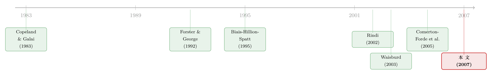

看不见报价人的名字，价差为什么反而变窄了？
本文读的是 Foucault, Moinas & Theissen (2007, Review of Financial Studies)：当限价单交易者掌握的是波动率信息（而非方向信息）时，买卖价差 (bid–ask spread) 的大小本身就在替市场预报未来的波动；而一旦把挂单人的身份「藏起来」，价差会同时变窄、且它对未来波动的预报力也会变弱。作者用巴黎证券交易所 2001 年那次「从实名到匿名」的制度切换做了检验，结果与模型吻合。
1 一个被普遍误读的直觉
先讲个常识。我们谈论市场透明度时，几乎是条件反射地相信：信息越多，市场越好。挂单人的身份，是一条信息；那么把它公开，按理说应该让市场更有效率、更有流动性才对。香港交易所、澳大利亚交易所都这么做——每一笔限价单，都附着发出它的券商代码。
可现实偏偏给了一个反例。2001 年 4 月 23 日，巴黎证券交易所（其后并入 Euronext）做了一件相反的事：它把限价单交易者的身份遮起来，从实名簿切换成匿名簿。如果「信息越多越好」是对的，那这一刀切下去，市场质量应该变差。
但作者发现的是：切换之后，样本股票的报价价差 (quoted spread) 和有效价差 (effective spread) 都显著变窄了。
这就是全文要解释的那个张力——为什么把一条信息藏起来，反而改善了流动性？ 要回答它，得先想清楚：挂单人的身份，到底承载了什么样的信息。
2 限价单，是一份「免费的期权」
接着，一个自然的问题是：限价单交易者到底在赌什么？
这里有一个被 Copeland and Galai (1983) 点破、但常被忽略的洞见：一张限价单，本质上是一份免费派发的期权。 一张卖出限价单，相当于一份执行价等于其挂单价格的（免费）看涨期权——别人可以在对自己有利时「行权」，把你这张挂单吃掉。当新信息到来、你的报价变得「陈旧」(stale) 时，投机者就会冲进来 pick off 你的限价单。
期权的价值取决于什么？波动率。 既然限价单是期权，那么挂单人在定价自己的订单时，就必须把对未来波动率的判断放进去。预期波动要变大，理性的挂单人就会报得更不进取（把价差拉宽），以减少自己被 pick off 的风险敞口。
于是核心命题浮出水面：买卖价差的宽窄，本身就是一个关于未来波动率的信号。 价差宽，说明挂单人预期未来波动高。这是全文的支点——限价单簿是一条波动率信息的管道。
注意这里的信息是波动率信息，不是方向信息。模型里所有交易者对资产的估值都一样（都等于 \(v_0\)），没人知道价格会往哪边走，只是有人更早知道「要变天了」。这一点至关重要：它把本文和经典的、基于方向性私有信息的微观结构模型区分开了。
3 模型：三个日期、三种单簿、一个跟随者
然后，我们把这个直觉写成模型。作者的设定极简，但每一块都为最后那个检验假设服务。
资产与事件。 有三个日期 \(t=0,1,2\)。在 \(t=2\)，资产的最终价值实现为：
$$V_2 = v_0 + I\cdot\varepsilon_1$$
其中 \(\varepsilon_1\) 等概率取 \(+\sigma\) 或 \(-\sigma\)；\(I=1\) 表示在 \(t=1\) 发生了一次「信息事件」，否则 \(I=0\)。信息事件以概率 \(\theta_0\)（\(0<\theta_0<1\)）发生。于是在 \(t=0\) 时，资产的预期波动率是：
$$\mathrm{Var}(V_2) = E\big((V_2-v_0)^2\big) = \theta_0\sigma^2$$
实现的波动在 \(t=1\) 就揭晓：要么大（\(\sigma^2\)），要么为零，取决于信息事件是否发生。
报价格点。 卖方限价单只能挂在两个价位 \(A_1 $$A_2 - A_1 = A_1 - v_0 = \Delta,\qquad \Delta < \sigma < 2\Delta$$ \(\Delta\) 是最小报价单位（tick size）。这个不等式很关键：它保证挂在 \(A_1\) 的单子是暴露在被 pick off 风险下的（因为 \(A_1 < v_0+\sigma < A_2\)），而挂在 \(A_2\) 的单子相对安全。 三种单簿。 先行的挂单人（the Leader，称「领头者」）从三种深度结构里选一种：「薄」单簿 \(T\equiv(0,2)\)、「浅」单簿 \(S\equiv(1,2)\)、「深」单簿 \(D\equiv(2,2)\)（括号里是 \(A_1\)、\(A_2\) 两个价位上挂出的手数）。薄簿意味着 \(A_1\) 上没有挂单、价差最宽；深簿意味着 \(A_1\) 上挂满、价差最窄。 时序。 \(t=0\) 时挂单分两阶段先后进行。第一阶段的领头者，以概率 \(\beta\) 是一个知情交易商（informed dealer，知道是否会有信息事件），以概率 \(1-\beta\) 是一个被动的预承诺交易者。第二阶段，一个不知情交易商到来，他先观察单簿，再决定是补单还是按兵不动——称他为 the Follower（「跟随者」）。 而真正关键的一步在于： 在实名市场里，跟随者能看到领头者的身份（知情还是预承诺）；在匿名市场里，他看不到。整篇论文的全部张力，就压在跟随者这一处信息差上。 跟随者面对一个薄簿（价差宽）时，可以补一张小单（\(n=1\)）去抢 \(A_1\) 这个价位。他补小单的期望利润是（Equation 6）： $$\Pi(1;T,\theta_T) = \theta_T\big[\alpha(A_1-(v_0+\sigma)) + (1-\alpha)(A_1-v_0)\big] + (1-\theta_T)(A_1-v_0) = \Delta - \theta_T\alpha\sigma$$ 这里 \(\alpha\) 是信息事件发生时投机者到场的概率，\(\theta_T\) 是跟随者看到薄簿后对「发生了信息事件」的后验信念。读这个式子：补单能赚到一个 tick（\(\Delta\)），但要扣掉被 pick off 的预期损失 \(\theta_T\alpha\sigma\)。后验信念 \(\theta_T\) 越高，补单越不划算。 当 \(\Delta<\theta_T\alpha\sigma\) 时，连小单都亏钱，跟随者干脆按兵不动。 这就是全文的机制核心——一个我称之为 威慑效应（deterrence effect） 的东西：宽价差 → 抬高跟随者对「要变天」的后验信念 → 削弱他补单的动力 → 价差得以维持宽。 那么身份信息从哪里进来？答案在跟随者那个后验信念 \(\theta_T\) 的形成方式上。 当波动率信息对称时（人人都知道），单簿不传递任何新信息，匿名与否毫无差别——这是作者的基准命题 Proposition 1：匿名不重要。 但当波动率信息不对称时，跟随者就得从单簿里学习。设知情领头者在「没有信息事件」时，以概率 \(\lambda\) 选择有竞争力的深簿 \(D\)、以概率 \(1-\lambda\) 选择薄簿 \(T\)（赌一把更高的利润）。那么跟随者看到一个薄簿后的后验信念是（Equation 10）： 这个式子告诉我们两件事。第一，恒有 \(\theta_T(\lambda,\beta)\ge\theta_0\)——看到宽价差，跟随者总会上调对信息事件的判断（威慑效应永远是正向的）。第二，也是最微妙的：在匿名市场里，跟随者无法把「知情者挂的薄簿」和「预承诺者随手挂的薄簿」区分开。 这一区分能力的丧失，正是匿名的全部后果。 于是反转出现了。 设想知情交易商的参与率（\(\beta\)，或更广义地说知情者占比）偏小。这时，一个不进取的宽报价，多半来自不知情的人——因为知情者本就不多。在实名市场里，跟随者一看挂单人是「预承诺者」，立刻明白这个宽价差只是随手挂的、并不蕴含坏消息，于是放心大胆地补单、把价差打窄。可在匿名市场里，他看不到身份，只能用「平均」的眼光看待这张薄簿——而平均意义上，薄簿里掺着一部分知情者的成分，于是他反而更愿意去竞争：因为他无法确认这张宽报价是不是「内行人」留下的危险信号。 作者由此得到两个干净的结论：当知情者参与率小时，切换到匿名会使 反过来，当知情者占比很大时，一个宽价差就成了「强警告」——它很可能真的来自知情者，于是匿名反而让跟随者更谨慎、行为比实名时更收敛，两个效应的符号都翻转。 把这两种情形合起来，作者提炼出两条可检验的、措辞极「脆」的预测： 预测一：切换到匿名，应当同时改变价差的大小和它对未来波动的预报力。
预测二：在给定知情者参与率下，价差的大小与它的预报力，在切换到匿名后应当朝同一个方向移动。 「同一个方向」这四个字是这篇论文最锋利的地方——它不是泛泛地说「匿名影响流动性」，而是给出了价差水平与价差信息含量之间一个可被数据证伪的联动关系。 接着把模型推到数据上。识别的来源，是 Euronext 在 2001 年 4 月 23 日 那次外生的制度切换：在此之前，券商-交易商限价单的身份是公开的；自此之后，整个 Euronext 限价单簿变为匿名。作者把这看成一次准自然实验，比较切换前后同一批股票的表现，并在多元回归里控制市场条件的变化。 衡量信息含量的做法。 作者把每个交易日切成 30 分钟一段，检验「某一段的买卖价差，是否能预测下一段的波动率」（在控制了一组能预报未来波动的变量之后）。这正是模型里 \(\mathrm{Cov}\big(|V_2-v_0|,\,S_{\text{small}}\big)\) 的实证对应物——模型证明在信息对称的基准下它严格为正： $$\mathrm{Cov}\big(|V_2-v_0|,\,S_{\text{small}}\big) = \sigma\,\mathrm{Cov}\big(I,\,S_{\text{small}}\big) > 0$$ 两个核心发现（作者报告其在统计上显著，并在 GARCH(1,1) 框架下对条件波动建模后依然稳健）： 价差变窄 + 预报力减弱，两者朝同一方向移动——这恰好落在模型「知情者参与率较小」那一支所预测的格局里。更进一步，作者指出：如果波动率信息是完全公开的，模型断言切换匿名应当毫无影响；而数据里影响真实存在，这反过来证明：限价单簿里既有公开的、也有私有的波动率信息。（关于「波动率本身能不能当作一把信息的尺子」，可参见《波动率，真的能当「信息」的尺子用吗？》。） 把这篇论文放回它的来路，故事会更清楚。 最早，Copeland and Galai (1983) 给出了那块地基——限价单是期权、做市商承担着被 pick off 的风险。沿着「身份/匿名」这条线，Forster and George (1992) 较早从理论上讨论了证券市场中的匿名问题。与此同时，Biais, Hillion and Spatt (1995) 用巴黎证券交易所的数据，第一次系统地刻画了限价单簿与订单流的实证结构，为后来所有用 Paris/Euronext 数据做的研究铺了路。  进入 2000 年代，关于事前披露流动性供给者身份的研究才稀稀拉拉出现：Rindi (2002) 研究事前披露知情交易者需求的效应，但她的模型里波动率信息不起作用；Simaan, Weaver and Whitcomb (2003) 则从合谋角度论证非匿名便利了流动性供给者串谋——可合谋假说并不能预测「切换匿名会改变价差对未来波动的预报力」，而这恰是本文在数据里找到的。还有一条容易混淆的对照：Waisburd (2003) 同样用 Euronext 数据，但研究的是事后披露身份，他发现事后匿名时流动性更差——方向与本文相反。两篇放在一起，恰好说明匿名的不同面向（事前 vs 事后）效果迥异。本文之后，Comerton-Forde, Frino and Mollica (2005) 把流动性的实证拓展到巴黎、东京与韩国三个市场，同样发现匿名环境下流动性更大。 本文的位置因此很清楚：它是第一篇把「事前披露流动性供给者身份」与「限价单簿的波动率信息含量」这两件事接到同一个模型里、并给出可证伪联动预测的工作。 Q：这和经典的、基于「方向性」私有信息的微观结构模型（如 Glosten-Milgrom、Kyle）有什么本质不同？ 本质区别在于信息的类型。本文里所有交易者对资产的估值完全相同（\(E(V_2\,|\,I{=}1)=E(V_2\,|\,I{=}0)=v_0\)），没人有方向优势，价差不是为了补偿逆向选择的方向风险，而是为了补偿被 pick off 的波动率风险。所以这里的私有信息是「会不会变天」，不是「往哪边走」。 Q：「匿名让价差变窄」这个结论是普适的吗，还是有条件的？ 有条件，且条件被作者讲得很诚实。只有当知情交易商参与率较小时，匿名才会让价差变窄、预报力变弱；当知情者占比很大时，符号会翻转。本文的巴黎数据落在前一种情形，但这本身提醒我们不能把「匿名改善流动性」当成放之四海皆准的定律。 Q：价差变窄，会不会只是因为这期间市场波动恰好下降、和匿名无关？ 这正是识别上最大的担忧。作者的应对是把切换当外生事件、在多元回归里控制市场条件，并用 30 分钟内的「前一段价差预测后一段波动」来分离信息含量，再加 GARCH(1,1) 对时变波动建模。但这终究是一次单一事件、单一市场的前后比较，缺少真正的对照组，平行趋势无法直接检验。 Q：模型里那个「事前 vs 事后」匿名的区别，真有那么重要吗？ 重要，而且数据替它背了书。Waisburd (2003) 的事后匿名让流动性变差，本文的事前匿名让流动性变好——同一个交易所、相反的结论。这说明「匿名」不是一个单一变量，披露的时点（挂单时还是成交后）改变了它对策略性行为的影响。 Q：为什么说这个结果反驳了「合谋假说」？ Simaan et al. (2003) 认为实名便于流动性供给者合谋、从而把价差撑宽。合谋假说能解释「匿名→价差变窄」，但它无法解释「匿名→价差对未来波动的预报力下降」。后者是本文独有的预测，也是它在数据里观察到的，因此本文的机制（信息/威慑）比合谋假说更能完整地解释证据。 Q：把这套逻辑搬到债券市场，会成立吗？ 直觉上有戏，但要小心。公司债是 OTC、交易商驱动、报价远不如股票限价单簿连续，「单簿深度」这个概念不直接适用。不过「报价宽度是否预报未来波动」「交易对手身份是否被定价」这两个问题，在交易商网络里同样尖锐（可参见《订单流里的「悄悄话」：当分歧越大，债市越听它说话》）。 1. 公司债电子化平台的「实名 vs 匿名」自然实验。
【经济故事】随着 MarketAxess、Tradeweb 等平台把部分公司债交易搬上电子簿，「报价人身份是否可见」成了可设计的制度变量。本文的机制预测：在知情交易商占比低的细分券种（如高评级、信息环境干净的债），匿名应当收窄报价价差、并削弱「价差→未来波动」的预报力。
【可行性】中。需要平台级的报价层数据（who-quoted-what）与协议变更的明确时点；TRACE 只给成交、不给报价身份，是主要瓶颈。识别依赖某个平台一次清晰的协议切换。 2. 把「外资持有人」作为知情者参与率的代理。
【经济故事】本文结果的符号取决于知情交易商的参与率 \(\beta\)。一个自然的实证代理是某券种里信息优势型投资者的占比。若能用外资持有比例的横截面变化做交互项，就能直接检验「参与率高低决定匿名效应符号」这条尚未被充分检验的预测。
【可行性】中。需要把持有人结构（如 eMAXX/Lipper 的债券持有数据）与一次匿名制度变更对齐，做异质性 DiD；难点在于「外资=知情」这个映射要额外论证。 3. 价差作为已实现波动的高频预报器：一个纯实证的横截面研究。
【经济故事】抛开匿名制度，本文最干净的可移植命题是「当期价差预测下一期波动」。这本身就是一个可以在大样本、多资产上检验的预测题：价差的信息含量在哪些资产、哪些市场状态下最强？
【可行性】高。用现成的高频限价单簿数据（如 TAQ、LOBSTER）即可，30 分钟分桶、控制已知波动预报变量后跑面板回归，不依赖任何制度事件，doable。 4. 流动性供给者匿名 × 做市商风险约束的交互。
【经济故事】本文的跟随者是风险中性、只算期望利润的。但现实做市商背着风险限额。当匿名改变了「宽报价是否危险」的推断，风险受限的做市商可能反应得更剧烈。把风险约束装进来，匿名的福利效应可能非单调。
【可行性】低到中。理论上可做（在本文框架里给跟随者加风险厌恶/库存约束）；实证要识别做市商约束的松紧，数据要求高。 我的判断。 这篇论文的贡献不在「匿名会不会改善流动性」这个二元结论——那只是表象，而且作者诚实地告诉你它会随知情者占比翻转符号。真正的贡献，是把「价差水平」和「价差的信息含量」第一次绑成一个可证伪的联动关系，并给出一个干净的机制（限价单=期权 → 价差是波动率信号 → 身份信息改变跟随者的贝叶斯推断）。「同向移动」这条预测，是任何竞争性假说（合谋、纯逆向选择）都给不出的，这让它的检验格外有说服力。 对识别的担忧。 最大的软肋仍是那次切换是单一市场、单一时点的前后比较：没有真正的对照组，平行趋势不可检验，2001 年前后市场状态的系统性变化只能靠协变量「控制」而非「排除」。Comerton-Forde et al. (2005) 在三个市场上的同向证据缓解了一些担忧，但都是观察性的。 后续想看到的。 一是把知情者参与率 \(\beta\) 真正测量出来、做异质性检验，直接验证符号翻转那条预测；二是把这套逻辑搬进交易商驱动的信用市场，看看「报价宽度预报波动」「对手身份被定价」在 OTC 结构下是否仍然成立。3.1 跟随者在算什么
3.2 身份如何改变这一切
4 反转：藏起身份，为什么让价差变窄
5 数据与检验：巴黎的那一刀
6 文献脉络
7 评论与延伸（Q&A + 研究方向）
(a) 几个可能的疑问
(b) 几个可能的研究问题与提案
8 参考文献与我的判断
参考文献